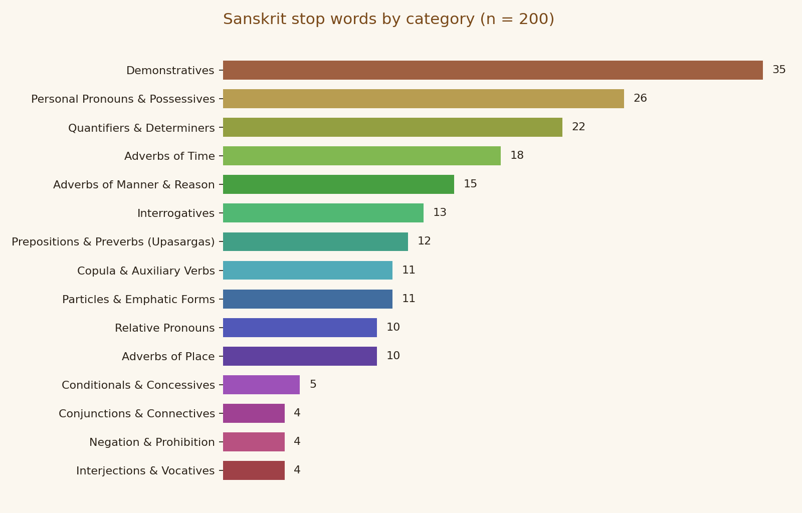
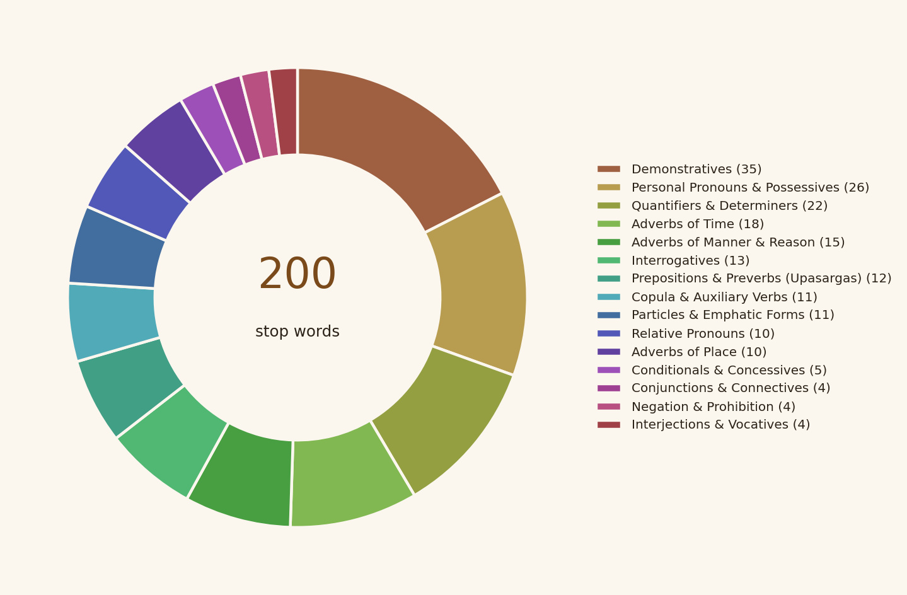

Stop words are very frequent words that carry little topical meaning, and most text-processing pipelines remove them before analysis. English has several well-known lists, but Sanskrit has few that are open, small and easy to inspect. This project, prepared for the Indic NLP exercise of the Monsoon Semester 2026, presents a hand-compiled list of 200 Sanskrit stop words in simplified Latin transliteration. The words are sorted into 15 grammatical categories and shown through interactive charts. Pronouns, demonstratives, quantifiers and adverbs make up most of the list, while categories such as articles and classifiers have no Sanskrit counterpart. The list is offered as a transparent starting point for preprocessing, teaching and later testing on real corpora.
Build a clean, duplicate-free Sanskrit stop-word list for use in text preprocessing.
Save it in Sanskrit_stopwords.py, named after the language and following the prescribed header pattern.
Group every word by grammatical function and show the breakdown visually.
Upload the work to a GitHub repository and present it as a web page.
Which grammatical classes make up most of a Sanskrit stop-word list?
How well do categories designed for English and Hindi, such as postpositions and classifiers, fit a highly inflected language like Sanskrit?
What must be tested before the list can be trusted on real Sanskrit texts?
The transliteration is simplified: long vowels are doubled (aa, ii, uu) and sh stands for both ś and ṣ.
""" ============================================================ Topic: Indic Language Stop Words for Natural Language Processing ============================================================ Author Name(s): Rupesh Rajak Semester: Monsoon Semester 2026 Affiliation: Department of Humanities and Social Sciences, IIT (ISM) Dhanbad ============================================================ """ # 1. Sanskrit Stop Words # Language: Sanskrit Sanskrit_stopwords = ["aham", "vayam", "aavaam", ...]
Breakdown by category. Hover over the bars, the ring or the legend to explore.


Sanskrit marks relations through case endings, so the list is dominated by inflected pronoun and demonstrative forms. One idea, such as “that”, therefore appears as many separate entries. Taken together, the four pronoun-type categories (personal, demonstrative, relative and interrogative) account for the largest share of the list. Adverbs and particles come next and behave much like function words in other languages. Two categories suggested for other Indic languages do not apply here. Sanskrit has no true postpositions, because its relations are carried by case endings and preverbs, and it has no classifiers. Both gaps are informative about how the language works.
The list is a curated sample, not a complete inventory. It has not yet been tested on a Sanskrit corpus, so no claim is made about its effect on retrieval or classification. Sandhi, the joining of words in running text, can hide a stop word inside a longer string, and the Latin transliteration loses some distinctions. Stop-word choices also depend on the task, so the list should be adapted and not applied blindly.
Add the original script beside each transliterated word.
Measure word frequencies and the effect of removal on a Sanskrit corpus.
Reduce inflected forms to base forms and compare list sizes.
Extend the same method to Hindi and other Indic languages.
Creative Commons (n.d.) Attribution-NonCommercial 4.0 International. Available at: creativecommons.org/licenses/by-nc/4.0.
Luhn, H. P. (1958) ‘The automatic creation of literature abstracts’, IBM Journal of Research and Development, 2(2), pp. 159–165.
Manning, C. D., Raghavan, P. and Schütze, H. (2008) Introduction to Information Retrieval. Cambridge: Cambridge University Press.
MA, Digital Humanities & Social Sciences — IIT (ISM) Dhanbad
Rupesh Rajak is currently pursuing an M.A. in Digital Humanities and Social Sciences at the Indian Institute of Technology (Indian School of Mines), Dhanbad (2025–2027). He graduated in History (Honours) from BBMKU. In the summer break of 2026 he spent six weeks on mining-community rehabilitation and CSR-related field activities. He also completed a Def-Space winter internship at the Bharat Space Education Research Center (December 2025–26).
Monsoon Semester 2026
Department of Humanities and Social Sciences